Windows 系统安装指南
环境要求
- Windows 10 及以上
- 不支持 Windows 7/8/8.1
TIP
不满足上述要求的系统将无法启动 WorkBuddy。
一、下载
- 访问 WorkBuddy 官网，点击 立即下载，等待安装包下载完成。
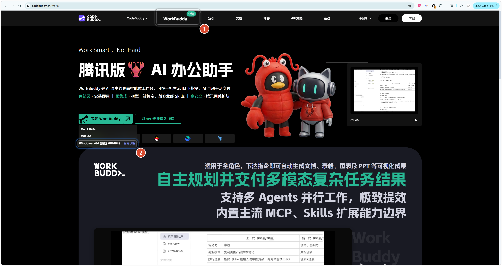
二、安装
双击已下载的安装包，启动安装程序；
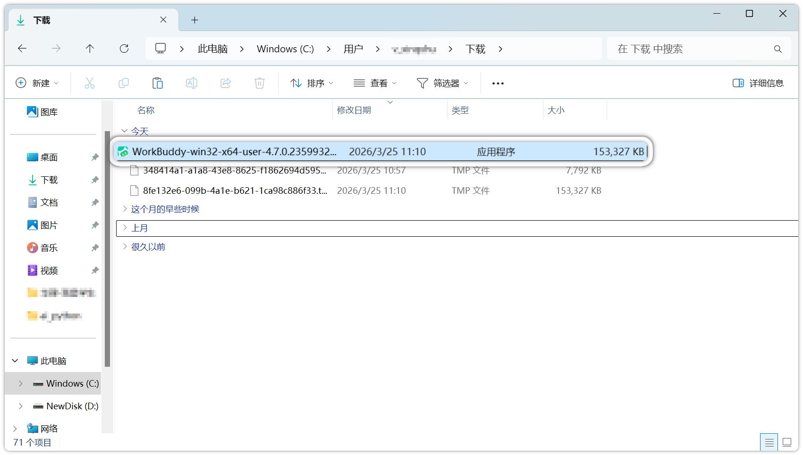
勾选 "我同意此协议"，点击 下一步；
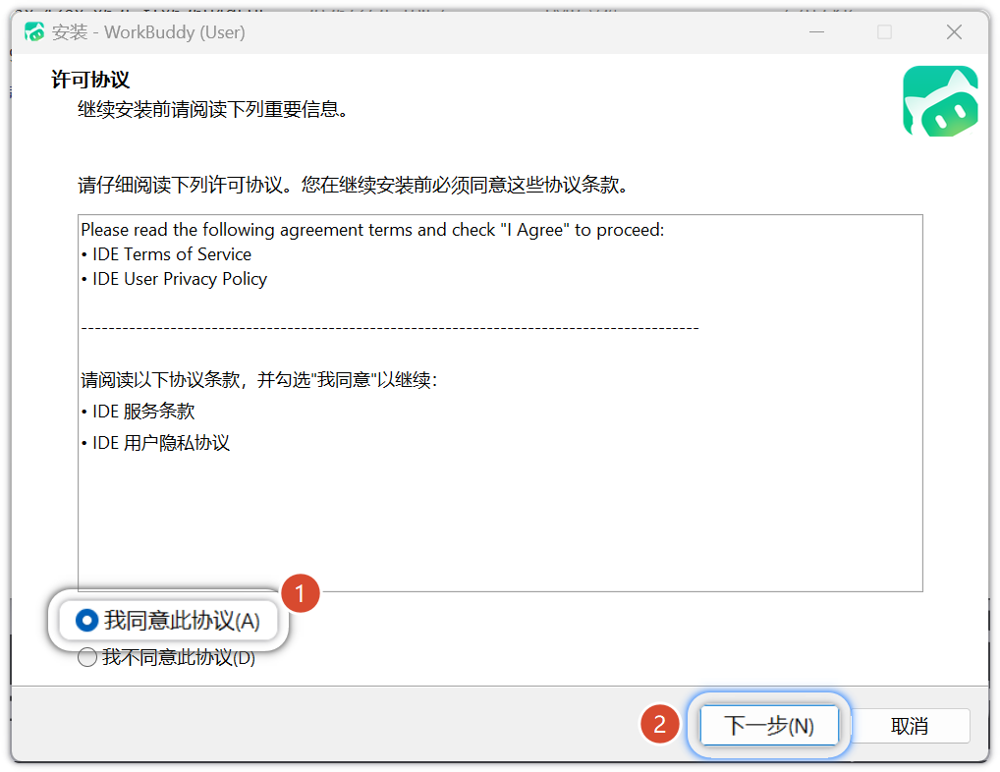
选择安装路径（默认路径可直接点击下一步），点击 下一步；
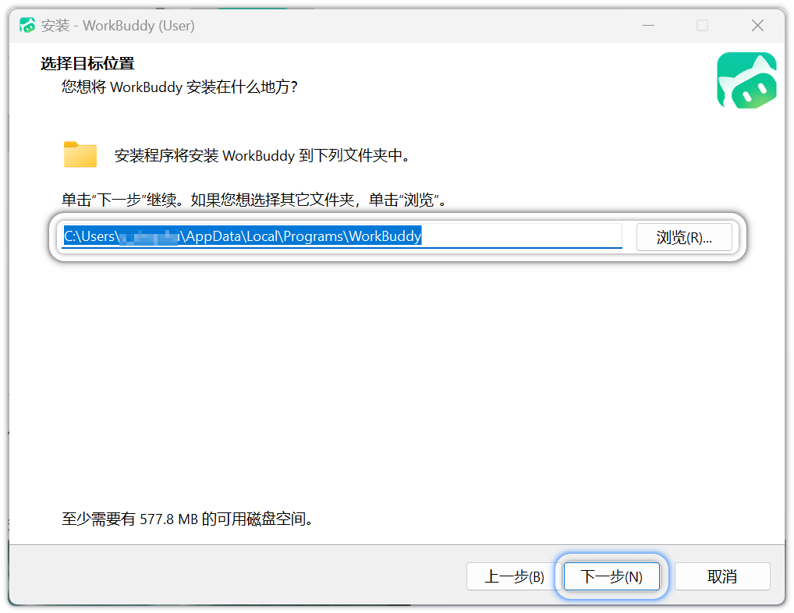
确认开始菜单文件夹，点击 下一步；
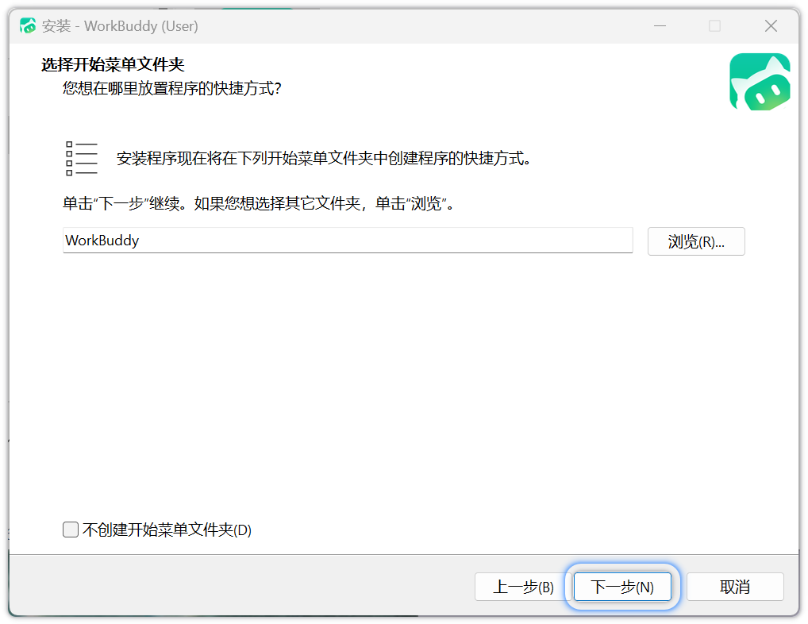
建议勾选 "创建桌面快捷方式"，点击 下一步；
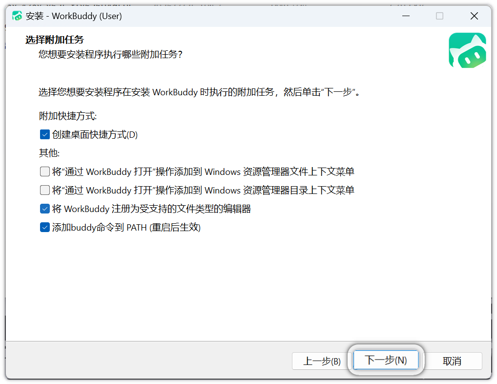
确认配置无误，点击 安装；
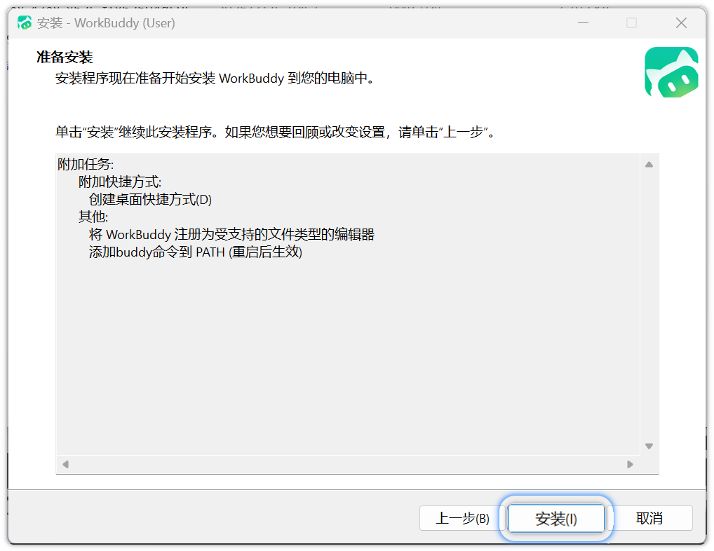
安装完成后，点击 完成 退出安装向导。
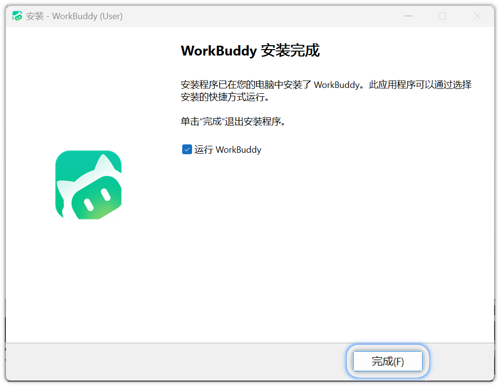
三、登录
启动 WorkBuddy，点击 登录 按钮；
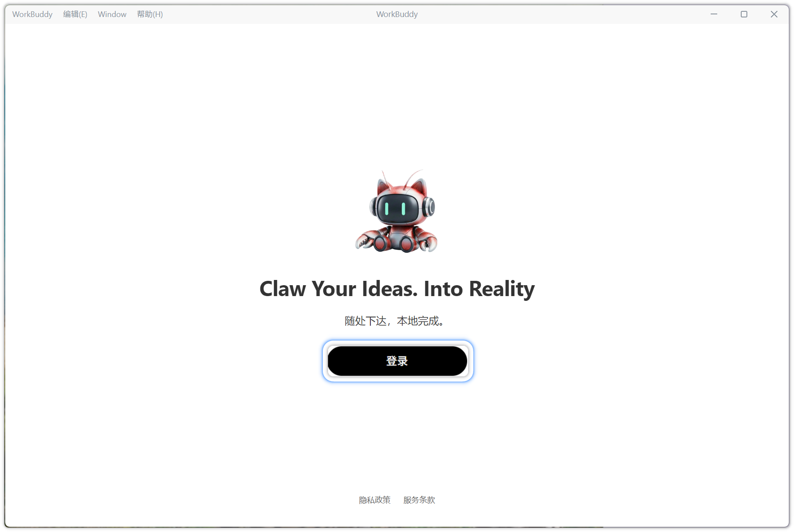
勾选《服务条款》与《隐私协议》，使用微信扫码完成登录；
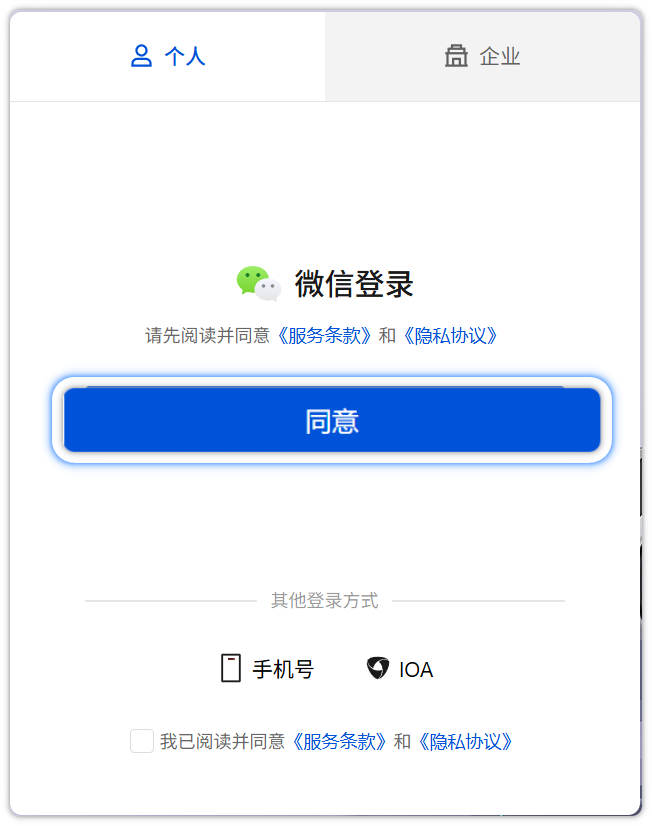
登录成功后自动返回客户端，即可开始使用。
语言设置
如需切换界面语言，点击左下角 头像 → 语言 进行切换。
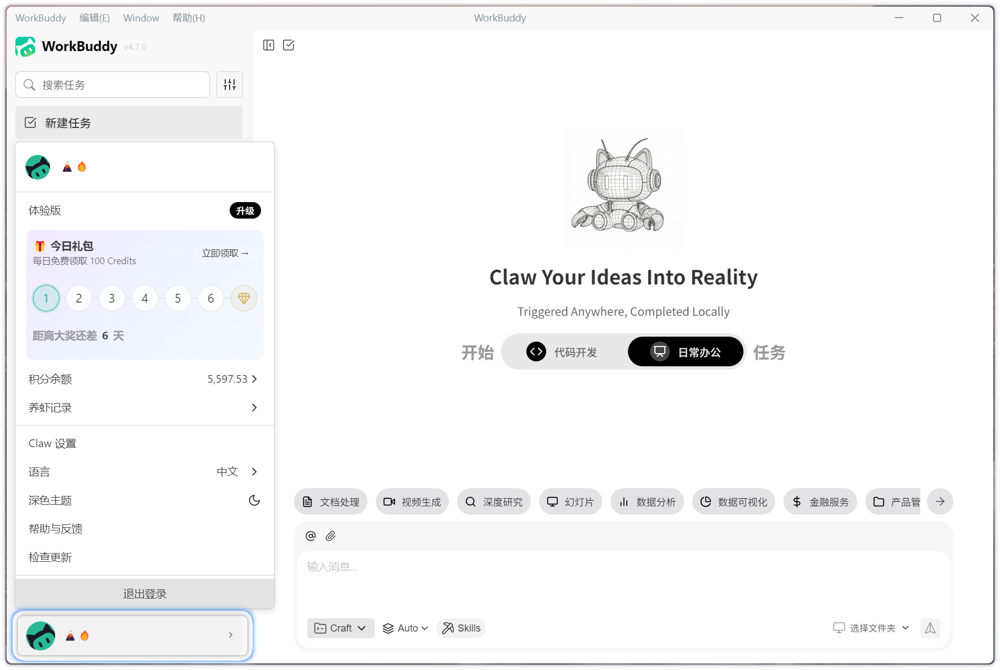
四、版本更新
点击左下角 头像 → 检查更新，系统将自动检测版本。
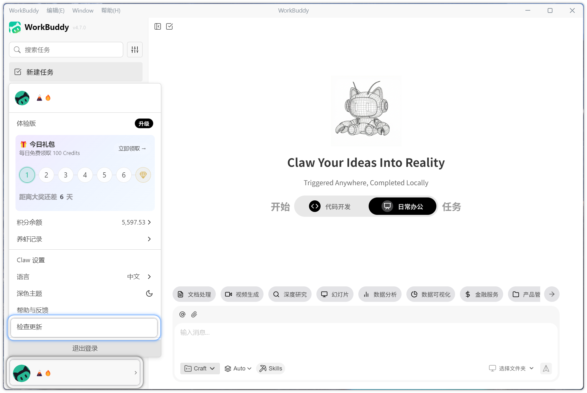
提示
若已是最新版本则无需操作；若存在新版本，系统将自动下载并完成升级。
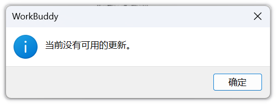